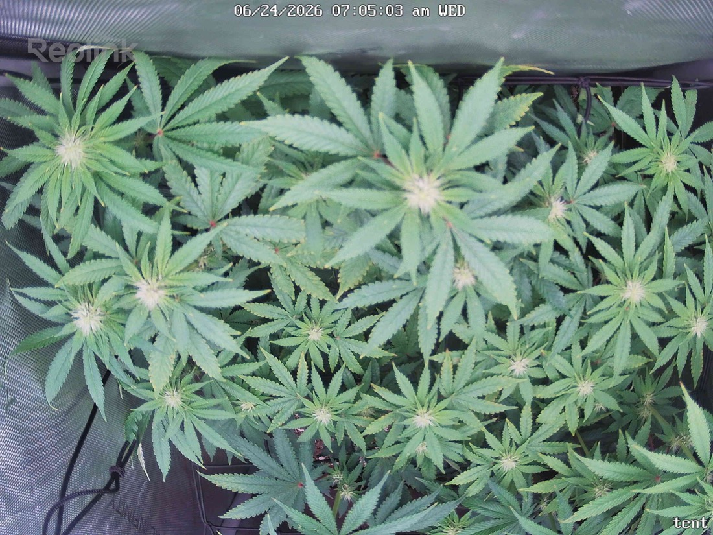

← All reports
Jun 24, 2026
Wed Jun 24, 2026 — 7:05 AM

Prognosis
Two snapshots ~19 hrs apart (prev at midday 11:53, current right at lights-on 7:05) — so some color/posture difference is just lighting and circadian timing, not a real change.
- Growth/structure: Canopy is full, even, and flat across the scrog — multiple bud sites visible at nearly the same height. Good apical leveling from the LST/scrog work. No new stretch, which is right for week 3 of flower.
- Color: Healthy medium-to-deep green throughout. The current frame looks marginally lighter, but that's the low-angle lights-on exposure, not yellowing. No interveinal chlorosis or edge burn.
- Posture: Leaves are praying/slightly upturned at center under the ~800 PPFD tops — normal, not tacoing. Outer/lower fans are flat and relaxed. No drooping or clawing → water status looks fine (last fed 6/20, due around 6/24).
- Stress signs: A couple of leaf tips show the light-stress tip burn you already flagged 6/22 — unchanged, not spreading, consistent with photons not nutrients. Red petioles still genetic. No tacoing or bleaching despite 800 at the tops.
- Pests: No stippling, webbing, or visible mites in either frame. Tracks with your clean inspections since ~6/14. Green Cleaner cycle is doing its job.
- Phase check: Germ 4/28, flipped 6/3 → ~3 weeks into 12/12. Bud sites forming at every node, no foxtailing or premature swell — exactly where a topped/LST'd photoperiod should be at this stage. On track.
Next actions: No action needed today. Watch the tip burn — if it creeps inward on the top colas, drop the center back toward ~700; otherwise hold. You're due for water (~4-day cadence from 6/20), so plan a feed in the next day if the pot's light.
Overall: Healthy, even, pest-free canopy progressing well into early flower — minor cosmetic light-tip burn is the only note. Strong prognosis.